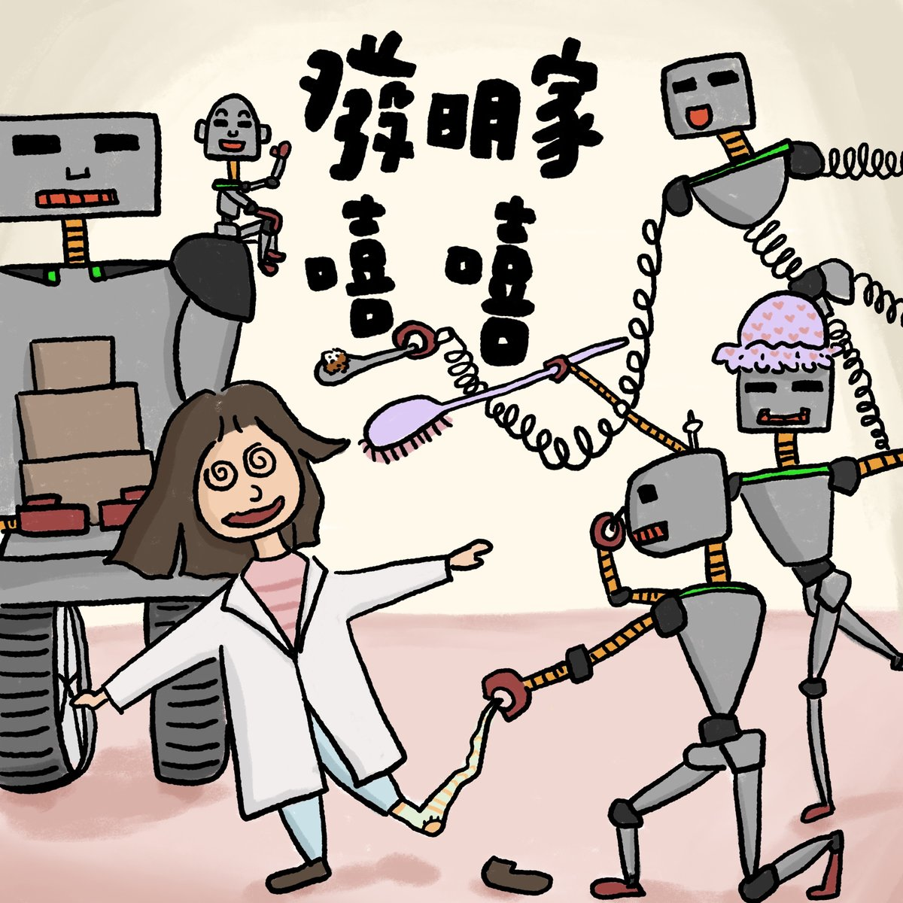

完整版廣播劇，含配音與音效，供角色聲音表情參考。
小鎮上的發明家嘻嘻每天忙著做實驗，連收包裹、陪朋友聊天、吃飯、脫襪子、洗澡都覺得浪費時間。於是她熬夜打造了一支「機器人大軍」：收包裹機器人、聊天機器人、餵飯機器人、脫襪子機器人、洗澡機器人，從此雜事全部交給它們！
沒想到機器人各司其「錯」的職：聊天機器人把宅配員拉去咖啡店大聊特聊，包裹沒人收；洗澡機器人把朋友帶來的草莓蛋糕拿去搓泡泡、沖進水管；脫襪子機器人見人就脫襪子；餵飯機器人更是用臭襪子包著爛蛋糕捲成「壽司」，塞進專心工作、看都沒看的嘻嘻嘴裡。朋友嚇得跑去報警，結果連上門關心的警察都被脫了襪子、抓去洗澡。
一場大混亂直到機器人通通沒電才結束。警察嚴正警告，嘻嘻低頭道歉——但下一秒立刻恢復開朗：「我之後會繼續改良的！」故事最後開放小聽眾投稿：你覺得嘻嘻應該要有什麼新發明呢？
哈囉，我們來一起說故事囉！今天要說的故事叫做《發明家嘻嘻》，改編自佑佑和希希的《發明家嘻嘻》。
在一個小鎮上，住著一個很聰明的發明家，他的名字叫做嘻嘻，他每天都忙著做很多實驗，發明很多神奇的東西。像是⋯⋯
（機械聲、擠果醬的聲音）
嘻嘻：嘿嘿！自動抹果醬機！從今以後，再也不用自己塗果醬在吐司上面啦！
嘻嘻咬了一口用自動抹果醬機做的草莓吐司。
嘻嘻：噁⋯⋯抹太多了⋯⋯太甜了！這個發明還要再改良！哎唷好忙好忙
嘻嘻每天都很忙碌，偏偏，還是有很多事情要做，像是⋯⋯收包裹。
（叮咚）
宅配：發明家嘻嘻的包裹喔～
嘻嘻：好了～來了～哎好忙好忙，要是有人可以幫我收包裹就好了⋯⋯
嘻嘻收完包裹，繼續做實驗，這時候⋯⋯
（叮咚）
朋友：嘻嘻～我來找你玩了～我們來聊天～
嘻嘻：好了～來了～怎麼樣？我們要聊什麼？我在做實驗，好忙好忙，要是可以有人幫我跟朋友聊天就好了⋯⋯
嘻嘻跟朋友聊天完，繼續做實驗，這時候⋯⋯
（肚子咕嚕）
嘻嘻：喔，好餓，要是有人可以餵我吃飯，我就可以邊吃飯邊做實驗了⋯⋯
嘻嘻吃完飯，繼續做實驗，到了好晚好晚的時候
嘻嘻：（伸懶腰）一整天這麼累，居然還要自己脫襪子、自己去洗澡⋯⋯真是太麻煩了！我應該要發明一些好幫手，來替我完成這些事情⋯⋯
於是，這一天晚上，嘻嘻沒有睡覺，（各種機器聲、焊接聲、工業製造聲）她花了好多好多時間工作，終於，在早上的時候⋯⋯
嘻嘻：完～成～了！嘻嘻的機器人大軍！
嘻嘻做了好多機器人，這些機器人有什麼功能呢？
收包裹機器人：我是收包裹機器人，我負責收包裹！
聊天機器人：我是聊天機器人，我負責跟嘻嘻的朋友聊天，我講話很像一般人吧？我的笑聲，也很像一般人喔！哈哈哈～哈哈哈～哈哈哈～
還有
餵飯機器人：我是餵飯機器人，我會餵別人吃飯！
脫襪子機器人：我是脫襪子機器人，我會幫別人脫襪子！
洗澡機器人：我是洗澡機器人，我會幫別人洗澡！
嘻嘻：呵呵～有了我的機器人大軍，我今天一定可以專心工作，其他的事情，就交給你們啦！
眾機器人：遵命！
於是，嘻嘻就開始工作。
（叮咚）
宅配：發明家嘻嘻的包裹喔～
送包裹的人來了，可是，聊天機器人卻出動了
聊天機器人：你好啊～
宅配：呃，你好啊，這是發明家嘻嘻的包裹，你可以幫忙簽收嗎？
聊天機器人：嗯，你覺得這個包裹裡面會是什麼啊？
宅配：呃⋯⋯我不知道啊
聊天機器人：你猜猜看啊！你覺得是衣服還是衛生紙啊？
宅配：這包裹很重欸，應該是書吧
聊天機器人：吼，有可能對不對？不然這樣，我們巷口有一家不錯的咖啡店，我們坐著慢慢聊。
聊天機器人居然帶著送貨員去巷口的咖啡店，大聊特聊！這時候，又有一個人來了
朋友：嘻嘻～我帶了好吃的草莓蛋糕喔～
洗澡機器人：沒問題，交給我處理～
洗澡機器人出動，把嘻嘻朋友手上的草莓蛋糕拿去浴室！
洗澡機器人：開始洗澡～搓泡泡！
洗澡機器人在草莓蛋糕上面擠了好多洗髮精，一直洗一直洗。
洗澡機器人：把泡泡沖掉，開水龍頭～
洗澡機器人開了水龍頭，草莓蛋糕被沖走了
朋友：喂～我們的草莓蛋糕啊！
脫襪子機器人：沒問題，交給我處理
脫襪子機器人出動了，他把嘻嘻朋友的襪子脫下來了！
朋友：喂！為什麼要脫掉我的襪子！？
嘻嘻的朋友害怕地逃走了，他跑去警察局，跟警察說嘻嘻家需要幫忙。
這時候，專心工作的嘻嘻根本不知道外面發生了什麼事，不過，她肚子突然傳來咕嚕咕嚕的聲音，她肚子餓了！
餵飯機器人：沒問題，交給我處理
餵飯機器人出動了，他拿了一個盤子，去浴室撈起爛爛的草莓蛋糕，然後再去跟脫襪子機器人拿他剛剛脫下來的襪子
餵飯機器人：來，嘻嘻，嘴巴張開～
嘻嘻：啊～
嘻嘻根本沒有轉頭看餵飯機器人要餵她吃什麼，就張開嘴巴了。餵飯機器人用嘻嘻朋友的臭襪子包著爛爛的草莓蛋糕，做成像壽司的東西，塞進嘻嘻的嘴巴裡。
嘻嘻：（嘴巴被塞住亂叫聲）
餵飯機器人：好吃嗎？再來一口～
嘻嘻：（嘴巴被塞住亂叫聲）
這時候又有人按電鈴了（叮咚）
收包裹機器人：沒問題，交給我處理
收包裹機器人出動了，他開門，外面站著兩個警察
警察：你好，我們剛剛收到報案，說這裡好像發生奇怪的事，需要幫忙嗎？
收包裹機器人：有幾件包裹？
警察：呃，我是說，需要幫忙嗎？
收包裹機器人：請給我簽收單，我來簽收，我是收包裹的機器人。
警察：呃⋯⋯沒事就好。
警察準備關門離開的時候⋯⋯
脫襪子機器人：沒問題，交給我處理
脫襪子機器人出動了，他把警察的襪子脫下來了！
警察：喂！喂！你要做什麼？
洗澡機器人：沒問題，交給我處理～
洗澡機器人出動，把警察搬到浴室！
洗澡機器人：開始洗澡～搓泡泡！
警察：喂～救命啊～
餵飯機器人：第二道菜也準備好了，餵飯機器人，出動～
餵飯機器人去拿了警察的臭襪子，又想餵嘻嘻吃
嘻嘻：（嘴巴被塞住亂叫聲）
就這樣，機器人把嘻嘻家搞得亂七八糟，一直到他們沒電了，嘻嘻和警察才鬆一口氣
嘻嘻、警察：總算得救了⋯⋯
警察對嘻嘻說
警察：發明家嘻嘻，你發明的這些機器人，讓這裡變得很危險，我身為警察，在此提出嚴正的警告！
嘻嘻難過地低下頭
嘻嘻：對不起，這些發明有點問題⋯⋯（語氣一轉，開朗少女成功記）我之後會繼續改良的！
發明家嘻嘻下定決心，下一次，她一定要發明更棒、更好用的東西！你覺得嘻嘻應該要有什麼新發明呢？
這就是今天的故事《發明家嘻嘻》，感謝佑佑和希希的提供喔！